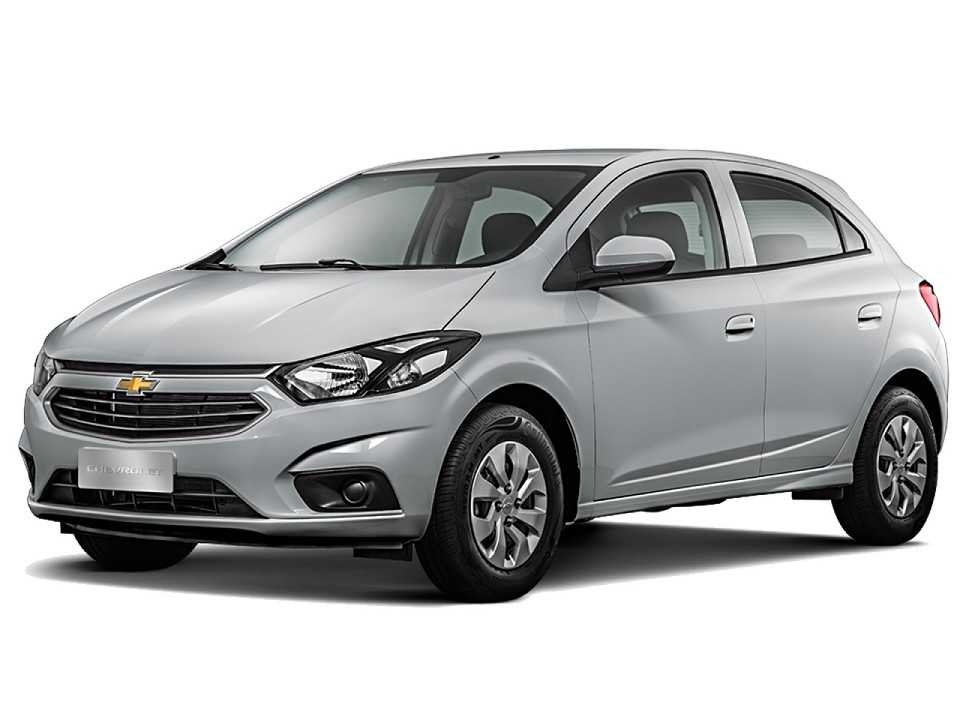
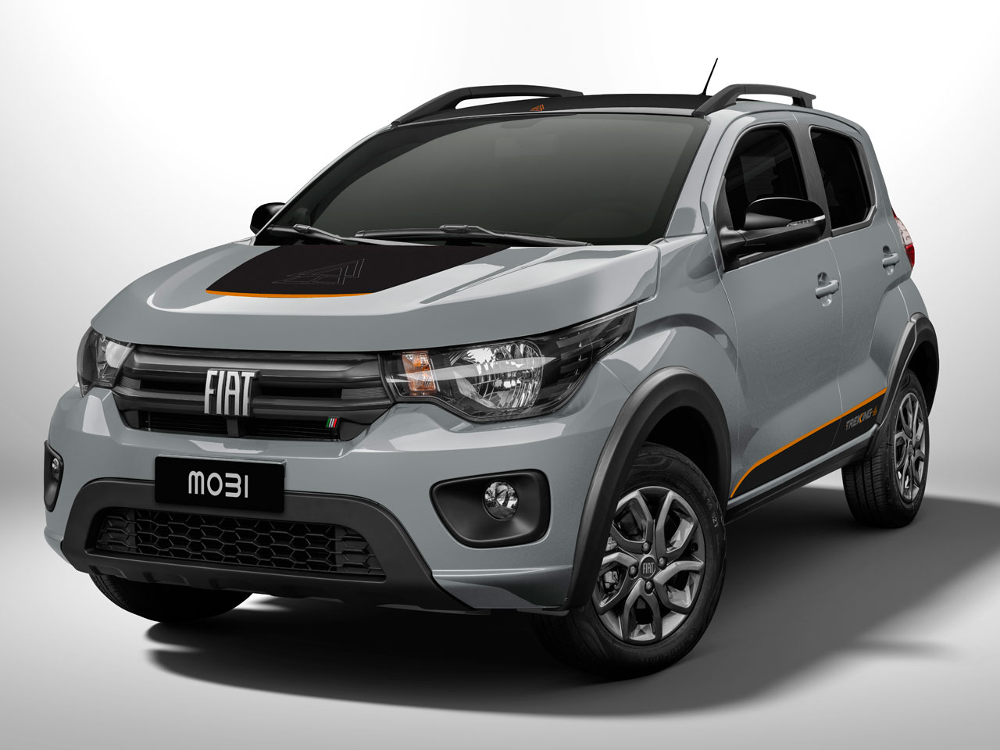
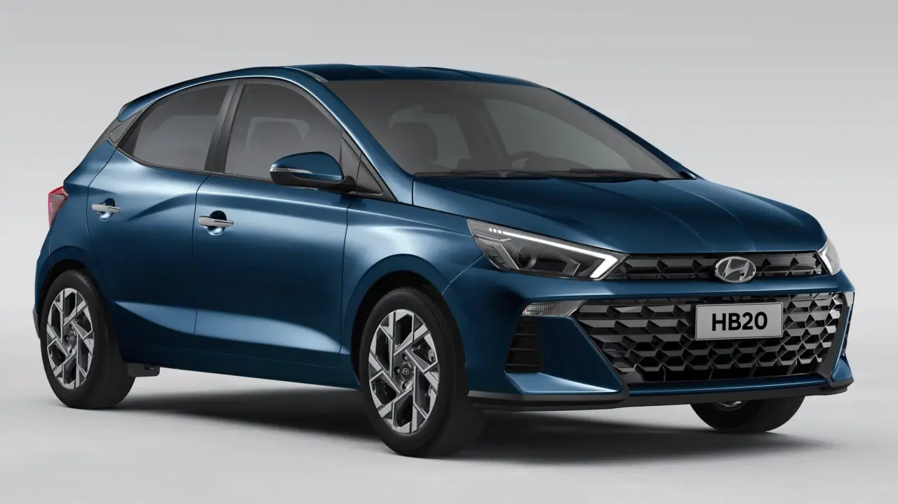
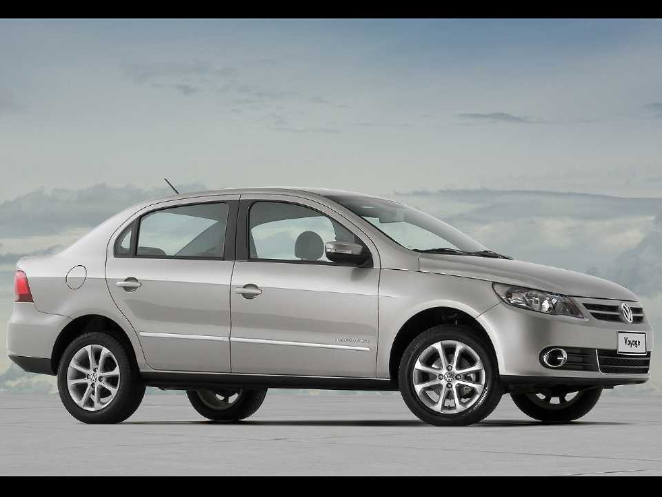

Os carros hoje em dia é o principal meio de locomoção do ser humano tanto para trabalho quanto para paceio.
Os carros populares são os mais procurados pois muitas vezes são mais baratos e mais confortaveis tanto para paceio quanto para trabalho.
Um dos carros mais procurados é o onix pois é eco nomico e barato sem contar no comforto que ele taz para a pessoa.
(Descrição)
Ele se comporta corretamente paravum carro de moto 1.0, mas falta vigos nas arrancadas, especialmente com o ar condicionado ligado. O Onix é visto como um carro prático e moderno, fácil e estacionar e com boa visibilidade. O silêncio na cabine tambem foi notado como um destaque.
O outra boa oprtunidade de compra é o Ford K.
(Descrição)

Antes de sair de linha, o Ford Ka aparecia entre os carros mais baratos do país. Segundo a Tabela Fipe, por exemplo, o preço do Ford Ka 1.0 SE Plus ano 2021. contem uma facíl manutenção. Contem uma grande economia de combustivel e sem comtar no comforto.
(Descrição)
Fiat Mobi tem design robusto, direção hidraulica e economia de combustivel sem comtar no bom conforto que ele estabelece.
(Descrição)
Ele vem de séries com fatoriais com máscara negra, painel de instrumentos Supervision. Freios ABS com EBD economico e e um bom comforto interno.
(Descrição)
Grande espaço intero com estabilidade na direção uma boa economia de combustivel com um motor potente e com baixo custo na manutenção.